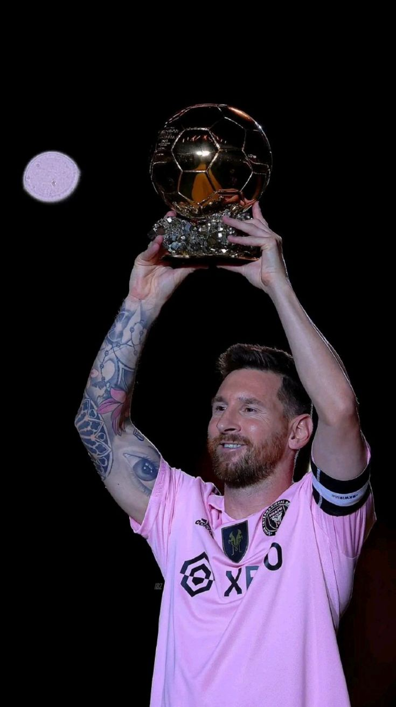

Lionel Messi
A flashback in Messi's FIFA World Cup magical journey.
A flashback in Messi's FIFA World Cup magical journey.
With a nation on his back and a career full of mythical achievements, Lionel Messi pursued the Holy Grail of world football. For many years, the missing piece of his larger-than-life football story was a World Cup with the colors of the Albiceleste.
Lionel Messi, born on June 24, 1987, in Rosario, Argentina, is widely regarded as one of the greatest footballers of all time. His journey began at a young age when he joined the youth team of Newell's Old Boys. At 13, he moved to Spain to join FC Barcelona's famed La Masia academy, where his prodigious talent quickly became evident.
Messi made his first-team debut for Barcelona at 17, and his career skyrocketed from there. Over 17 seasons with the club, he became their all-time top scorer, leading them to numerous titles including 10 La Liga championships, 7 Copa del Rey titles, and 4 UEFA Champions League trophies. His partnership with teammates such as Xavi, Andrés Iniesta, and later Neymar and Luis Suárez, was crucial to Barcelona's success during this period.
Messi's playing style is characterized by his extraordinary dribbling skills, vision, and precise finishing. Standing at 5'7", his low center of gravity allows him to change direction swiftly, making it incredibly difficult for defenders to dispossess him. He is equally adept at scoring with both feet, although his left foot is particularly renowned for its accuracy and power.
In 2021, due to financial constraints faced by Barcelona, Messi moved to Paris Saint-Germain (PSG). At PSG, he continues to demonstrate his exceptional skills, contributing to the team's domestic and European campaigns.
Internationally, Messi has been a pivotal figure for Argentina. Despite early struggles in his international career, he led Argentina to victory in the 2021 Copa América, earning his first major international trophy. His crowning achievement came in 2022, when he captained Argentina to their third FIFA World Cup victory, solidifying his legacy as one of football's legends.
Throughout his career, Messi has won the Ballon d'Or award multiple times, recognizing him as the best player in the world. Off the pitch, Messi is known for his humility and philanthropic efforts, including his work with the Leo Messi Foundation, which supports access to education and health care for vulnerable children.
Lionel Messi's impact on football is immeasurable, inspiring countless fans and aspiring players around the globe. His records, accolades, and unforgettable moments on the field have cemented his place in the pantheon of sports greats.
"I have seen the player who will inherit my place in Argentine football and his name is Messi. Messi is a genius."